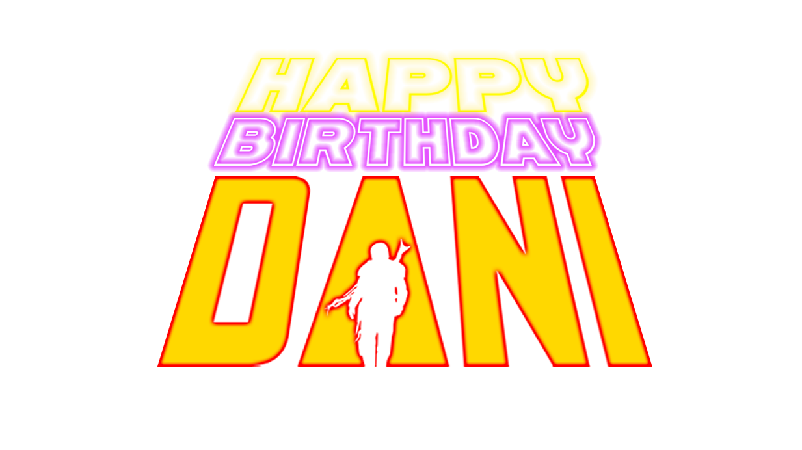

SENAATOOOOOOOOORR!!
CONGRATULATIONS ON ONCE AGAIN SUCCESSFULLY COMPLETING A FULL ROTATION AROUND THE SUN!
(AND A KESSEL RUN TOO.)

FELIZ CUMPLEAÑOS MI NIÑA ADORABLE, DANI!!
Looking back you had a goddamn big year and you navigated throught it like a millenium falcon flying through a spice mine,
some bumps here and there but you flew into lightspeed like no ones business.
So many big changes and decisons you took based on self belief,
which payed off and ignited the super determination inside you.
To sum it up in short highlights, you are straight up awesome
and I am super duper proud of you.
There were some hurdles, setbacks, moments when things didnt play to the plan, numerous other stuff which you faced by yourself,
but the way you still stood up from all of it, dusted it off, kept going and still managed to reach here, is just a testament to your strength
and what you are capable of.
And as I have always said, this is just the start and you have a long way to go and so much to conquer and win.
May the force be with you my girl!
Wishing and will always pray the coming years bring you more success, blessings, warmth, peace, love, fulfilment of your deepest desires and a prosperous, healthy life ahead!
May your chase to your goals be smooth, as we know you are strong enought to overcome the small obstacles in your way.
Again, Happiest of birthdays to my hardcore, tough and bubbly girl!
And remember however steep maybe the climb, you will always have it on you to scale it and reach the summit.
Best days and more successes are yet to come!!!
Love you!
My Senator!!
The universe is a place of wonder and mystique,
With things beyond what we can seek.
And you, my love, are like a cluster of radiant stars,
That I admire through my lens, though their beauty is never too far.
Your luminance surpasses all that's in sight,
Leaving those who see you in sheer delight.
Your mere existence creates a cosmic stir,
Bringing light to the darkest places, as you forever do confer.
Like a fleeting shooting star, you're just out of reach,
But I dream of the day when I'll be within your celestial beach.
You're the brightest star in our galaxy, a sight to see,
And I eagerly await the day when I'll be in your heavenly company.
You Masterpiece Of A Woman,
I'll Hold You In My Heart, Till I Can Hold You In My Arms
You are my cherished friend,and love
A presence in my life that means goddamn so much to me.
And I have repeatedly said talking to you is always an highlight for my day, be it day, night, midnight, mid-early-morning, etc etc, you get it I am sure.
Always cherished every micro second spent with you, even if its on text for now. (And a grand total of 4 mins on calls, out of which 3 mins you werent able to listen due to poor connection. Still remember your voice though.)
Your presence has shown me how deep connections should feel like! And I am hoping its the same for you?
Nothing can get better than loving you tbh. The possibility of meeting you, whenever it will be just makes so giddy and excited also a little scared to be frank.
Being with you brings a sense of ease and warmth? I dont know how to explain, or maybe that feeling cant be named? but damn sure I can open up and talk anything from a still pebble to astronomy and stars. And yes I have been idiot on numerous occasions, thank you for tolerating me.
Coffee tastes better when you are around, days feel extra sunshiny and bright?
A nice breeze of wind with the fragnance of fresh grass on a sodt sunny day?
Sleepy eyes open up sharp seeing your notification on my phone, and believe it or not I literally count days at times when we go without talking.
Your passion, intelligence, and all of you from head to toe captivate me beyond words.
Thank you for the joy and happiness you bring into my life.
It means everything to me.
As I conclude this letter, I want you to know that I will always be here for you, even when you are far away.
I will always be your biggest cheerleader, your strongest supporter, and your most loving partner.
I am honored to call you mine, and I look forward to the day when we can be together again.
Wishing, loving, manifesting, praying and telling the universe to have you in my life for the coming years ahead, and to meet you as soon as possible.
Thank You My Senator!
And on this sweet day today, I can't be grateful enough for the role you played in reigniting my interests and carrying us on the path to UI/UX and the time we spent learning it will always be a core memory for me.
All the online classes when we were having mate and coffee with breakfast and evening snacks aligned together, the post class discussions, our half dead internet connections which used to later run high on our spirits,
your last moment earphone betrayal, and the day you incorporated me in your big people meet.
(Still remember how gorgeous you looked that day in red, drinking mate and smiling, like damn wow.
Recalling that send me into bliss mode while typing this out.)
Yes, by always I even mean till the day I will be living my days out at the old age home playing UNO, or who knows I have the fortune of being around you at that time too.
Well whatever you have taught me so far, from brewing mate, skin care, getting me back into anime, so many thinggggssss,
to discussing our sticker corporation, everything.
Looking forward to build some more core memories with you and also yes to try my best to repay your trust in me, and let us be successful designers, and have a nice sweet sticker shop too.
May your coming birthdays be as you want them to be, wishing your everyday be peaceful, calm, fulfilling and happy, spending time around the babies and your efforts in everything you do have fruitful returns.
Take care Dan! Love you!
Just a quote I cam across
"Quiero hacer contigo lo que la primavera hace con los cerezos."
-Pablo Neruda

The beautiful oil painting captures the essence if a girl known as Daniela with her dear feline, in a dreamlike setting where she is depicted as a graceful figure, and vibrant poppies complementing the wispy clouds in a clear blue sky.
Her features are rendered with the utmost care and precision, showcasing her natural beauty and warm smile. with the sun shining down upon her, illuminating her flowing hair and delicate features. The brushstrokes are bold yet delicate, imbuing the piece with a sense of motion and life.
This painting is a true masterpiece that will be cherished for generations to come."